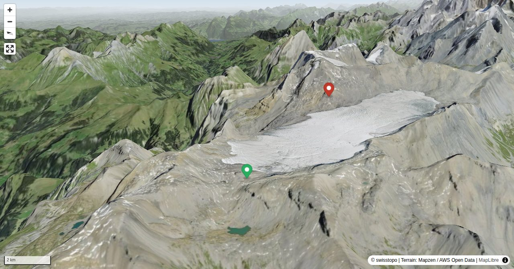

Auf den Wildstrubel, ohne Gletscher zu berühren, und dies von der Wildstrubelhütte aus. Auch das geht, genügend Ausdauer, vor allem im Abstieg, vorausgesetzt. Weiche Knie wird man am Abend haben, aber die Route über den Tierbergsattel und zum Rezligletscherseeli sind einzigartig schön. Für diese Erlebnisse lohnt sich die Anstrengung.
Alpine hiking, climbing and other mountain sports Sabine and Fredy Joss's passion. They have been writing and photographing for the SAC publishing house and the club magazine Die Alpen for many years. Sabine is also a biologist and tour guide; Fredy a proofreader and editor for various magazines.
Quick Facts
| Summit elevation | 3243 m |
|---|---|
| Difficulty | SAC T4 Alpine hiking with exposure, rougher terrain, and sections that are not suitable for beginners. Guide |
| Trailhead | Wildstrubelhütte SAC |
| Distance | 15.2 km (out-and-back) |
| Total ascent | ~1167 m |
| Elevation range | 1104-3243 m |
| Route sources | SAC Route Portal |
Photos


Route Map & Elevation
i
i
sac_scale (precise T1–T6) with
swissTLM3D Wanderwegart
fallback where OSM is silent (coarser T2/T3 and T4+ buckets).
Coverage: OSM 84.8% · swisstopo 14.9% · unknown 0.0%.Elevations computed from the inlined GPX track (SwissTopo height API).
Loading forecast…
3D Terrain View

Route Details
Von der Wildstrubelhütte über den Tierbergsattel
- TODO: Step 1 description.
- TODO: Step 2 description.
Terrain & safety
Unten weiss-rot-weiss markiert, oben einige verblasste weiss-rot-weisse Markierungen. Gute Sicht wichtig. Steilflanke zum Flueseeli teilweise exponiert, einige Seilgeländer. Über eine kurze Felsstufe (ca. 3 m) auf ca. 2640 m braucht es die Hände, um darüberzukraxeln. Es lohnt sich, dort ein wenig nach dem besten Durchgang zu suchen. Am anspruchsvollsten dürfte die Steilflanke vom Flueseeli hinunter sein, weil sich dann die Müdigkeit bemerkbar macht.
Source: SAC Route Portal
Getting There & Back
Start: Wildstrubelhütte SAC (2788 m)
Directions from to Wildstrubelhütte SAC
End: Lenk, Simmenfälle (1105 m)
Directions from Lenk, Simmenfälle back to
Field Reference
| Trailhead | Wildstrubelhütte SAC | 46.38290, 7.46790 |
|---|---|---|
| Summit | Wildstrubel (3243 m) | 46.40034, 7.52863 |
Coordinates are WGS84 decimal degrees (lat, lon). Emergency: 112 (general) or 1414 (Rega air rescue). Page URL: